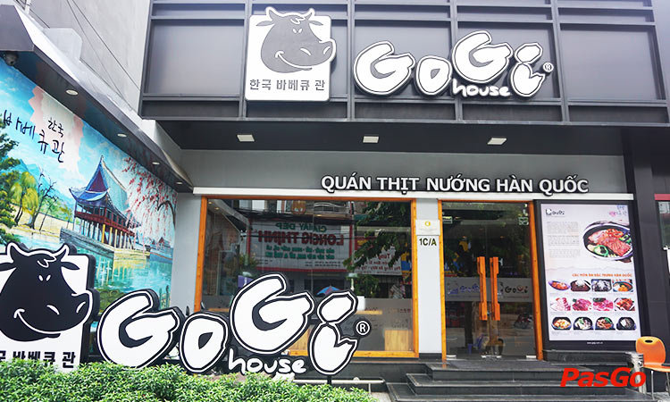
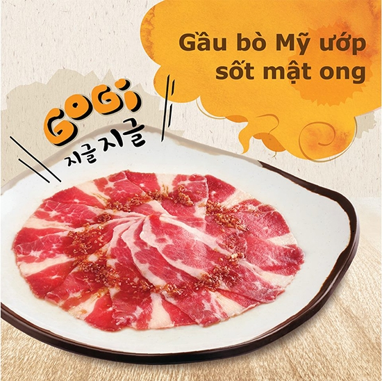
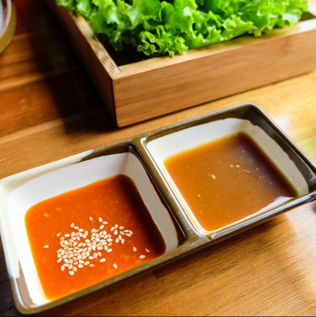
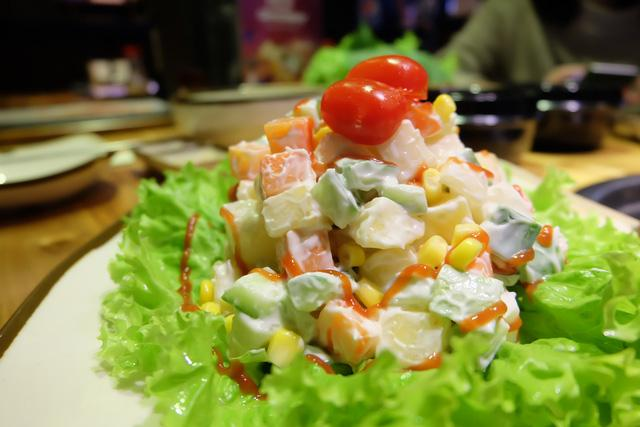
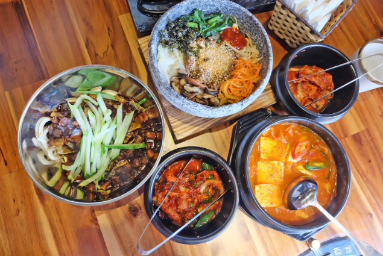

Quán thịt nướng Hàn QuốcGoGi House (Quán thịt nướng Hàn Quốc) sẽ đưa bạn đến Seoul, nơi những con phố bình dị, những quán ăn đã trở nên quen thuộc và gắn bó với người dân xứ Hàn. Nếu đã một lần thưởng thức thịt nướng tại GoGi House, bạn sẽ không thể quên được hương vị “ngất ngây” của những món sườn non bò Mỹ, nạc vai bò Mỹ, dẻ sườn tươi…. khi hòa quyện vào với các loại gia vị đặc trưng của xứ sở Kimchi đã trở nên hấp dẫn đến thế nào. Ngoài ra, những món ăn kèm không thể bỏ qua như cơm trộn, mỳ lạnh, canh Kimchi và các loại lẩu cũng sẽ làm bạn ấn tượng thêm về nền ẩm thực Hàn Quốc. |
 |
1, Thịt được ướp sốt đậm đà
Các món ăn Hàn Quốc thường không quá khó để chế biến nhưng công cuộc chuẩn bị lại cực kì công. Thịt dùng chuẩn Korean BBQ vì vậy thường được ướp sốt đậm, thậm chí thịt tại GoGi còn được ướp sốt trong 48 tiếng để khi nướng có độ cháy xém vừa phải, mà vẫn giữ được độ ngọt mềm của thịt. |
 |
|  |
2, Ssamjang- Sốt chấm thịt nướng đặc sản Hàn Quốc
Sốt chấm Ssamjang cay nồng thường được dùng để ăn kèm với các loại thịt nướng. Đó là hỗn hợp được trộn giữa tương đậu và tương ớt lên men..mỗi khi thịt chín ruộm, người ta phết một chút sốt lên bề mặt miếng thịt, cuộn cùng với kim chi, xà lách xoăn, dưa chuột. Cho tất cả vào miệng và nhai kỹ bạn sẽ cảm nhận được ngay hương vị đặc biệt của loại tương này. |
3, Các món ăn kèm chuẩn Hàn
Khi ăn thịt nướng, để kích thích vị giác, đi cùng công dụng chống ngấy tuyệt hảo thì người Hàn vẫn thường thưởng thức thịt ăn kèm lá kennhip (giống lá kinh giới), hay kimchi chua cay để đem đến một hương vị lôi cuốn mãnh liệt. |
 |
|  |
4, Lẩu Hàn Quốc chốt hạ bửa thịt nướng đủ chất
Bạn sẽ chọn Lẩu Bulgogi, Lẩu Kimchi hay Lẩu Quân Đội để làm bữa nướng thêm trọn vẹn. Sau khi ăn phủ phê thịt nướng mà cảm thấy “háo nước” thì có thể chọn ăn Lẩu Bulgogi hoặc lẩu Kim chi trước khi dùng món tráng miệng để hạ màn. |